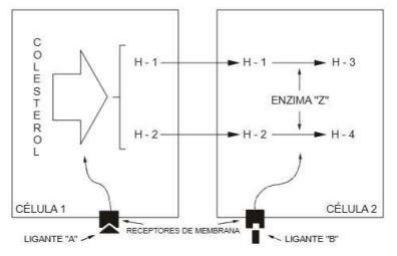
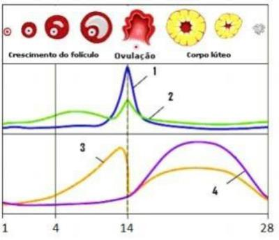

Questão 1 · Esteroidogênese · 4000114956Em uma mulher com deficiência de aromatase, a metabolização que está comprometida é:
A conversão de colesterol em androstenediona.
B conversão de androstenediona em estradiol.
C conversão de colesterol em estradiol.
D conversão de androstenediona em progesterona.
Questão 2 · Fase lútea · 4000114890Na fase luteínica média de um ciclo menstrual normal, podemos afirmar que a
A Progesterona está baixa, o muco cervical tem filância intensa e o endométrio será secretório.
B Progesterona está alta, o muco cervical está com a cristalização em grumos e o corpolúteo deve estar presente.
C Progesterona se encontra em níveis semelhantes ao verificado durante a menstruaçãoe o muco cervical se cristaliza, formando ramificações secundárias e terciárias.
D Progesterona deve estar elevada, o endométrio será proliferativo misto e o mucocervical abundante.
Questão 3 · Fases do ciclo menstrual · 4000114817Em um ciclo menstrual normal a sequência esperada é:
A Pico do estradiol – pico do LH – ovulação.
B Pico de LH –pico de estradiol – ovulação.
C Pico de LH – ovulação – pico do estradiol.
D Pico de estradiol – pico de progesterona – ovulação.
Questão 4 · Ciclo uterino · 4000114357O endométrio que não é encontrado em um ciclo menstrual monofásico é:
A Hiperplásico.
B Atrófico.
C Proliferativo.
D Secretório.
Questão 5 · Fase f olicular · 4000112765Em relação ao ovário está incorreto:
A As unidades foliculares são constituídas das células granulosas que rodeiam o óvulo e das células tecais que envolvem os primeiros.
B De acordo com a teoria das duas células, o estradiol é produzido nas células da teca interna através da conversão da androstenediona proveniente das células da granulosa.
C No processo de crescimento folicular, a grande maioria dos folículos se degenera, processo conhecido como atresia folicular.
D Tanto o ovário, através do estradiol e progesterona, como o hipotálamo através do GnRH influenciam o volume de secreção hipofisária de gonadotrofinas.
E O corpo lúteo produz progesterona.
Questão 6 · Fisiologia do ciclo menstrual · 4000103191Na fisiologia menstrual:
A o LH determina o pico do estradiol, que tem implicação na ovulação.
B no final da 1a fase, o estrogênio atinge o pico e exerce feedback positivo no hipotálamo e na hipófise.
C para ocorrer a ovulação, o LH e o FSH devem estabelecer picos 2 dias antes.
D não ocorrendo a fecundação, a descamação endometrial é decorrente da eliminação do óvulo não fecundado e do corpo lúteo.
Questão 7 · Roteiro diagnóstico · Fisiologia do ciclo menstrual · 4000081261Uma mulher de 22 anos de idade procura atendimento ambulatorial por atraso menstrual de 12 dias. Trouxe Beta-HCG negativo. Considerando os níveis de FSH, LH e estradiol dentro da normalidade e a progesterona abaixo do esperado, podemos afirmar que:
A Essa paciente está muito provavelmente na fase secretória endometrial
B Essa paciente tem corpo lúteo persistente
C Essa paciente não parece ter ovulado neste ciclo
D Essa paciente tem atrofia endometrial
E Essa paciente provavelmente faz uso de anticoncepcional combinado
Questão 8 · Esteroidogênese · 4000078599A biossíntese do estrogênio exige a ação combinada de duas gonadotro nas sobre dois tipos de células. Esse conceito é conhecido como teoria das duas células na esteroidogênese ovariana. Marque a opção correta sobre sobre a biossíntese do estrogênio
A Em resposta a estimulação do FSH, as células tecais sintetizam androgênios, androstenediona e testosterona que se difundem para as células da granulosa que expressam níveis elevados de atividade 21-hidroxilase em resposta à estimulação do LH, convertendo androgênios principalmente em estradiol.
B Em resposta a estimulação do TSH, as células da granulosa sintetizam androgênios, androstenediona e diidrotestosterona que se difundem para as células da teca que expressam níveis elevados de 3B- ol – deidrogenase em resposta à estimulação do LH, convertendo androgênios principalmente em estrona.
C Em resposta a estimulação do FSH, as células tecais sintetizam estrogênios, estradiol e estrona que se difundem para as células da granulosa que expressam níveis elevados de atividade da aromatase em resposta à estimulação do LH, convertendo estrogênios principalmente em testosterona.
D Em resposta a estimulação do LH, as células da granulosa sintetizam estrogênios, estriol e estrona que se difundem para as células da teca que expressam níveis elevados de atividade da 21-hidroxilase em resposta à estimulação do TSH, convertendo estrogênios em progesterona.
E Em resposta a estimulação do LH, as células tecais sintetizam androgênios, androstenediona e testosterona que se difundem para as células da granulosa que expressam níveis elevados de atividade da aromatase em resposta à estimulação do FSH, convertendo androgênios principalmente em estradiol.
Questão 9 · Fase f olicular · 4000068305Em relação ao crescimento folicular, estão corretas as seguintes alternativas: 1. O crescimento folicular até a fase antral inicial é permanente durante a vida até a menopausa. 2. O hormônio antimulleriano é um marcador da reserva ovariana e está envolvido no aumento do crescimento folicular e, consequente, apoptose. 3. O estímulo com gonadotro nas é pré- requisito para o desenvolvimento dos folículos antrais iniciais.
A 1 e 3
B 1 e 2
C 2 e 3
D 1, 2 e 3
E somente 1
Questão 10 · Ciclo menstrual · 4000050622Sobre o ciclo menstrual humano, é INCORRETO afirmar:
A A reserva ovariana é determinada ao nascimento e sofre queda constante, mesmo durante períodos fisiológicos de anovulação, como na infância e na gravidez.
B O desenvolvimento folicular ovariano é dependente de níveis basais de androgênios.
C A segunda divisão meiótica do oócito é completada antes da ovulação, sob efeito do hormônio luteinizante (LH).
D A esteroidogênese ovariana consiste em um processo de ação conjunta das células da teca e da granulosa, com ação combinada de LH e FSH.
E Os níveis de inibina atingem o ponto máximo no meio da fase lútea e diminuem caso não haja gravidez, permitindo nova elevação do hormônio folículo estimulante (FSH).
Questão 11 · Fase secretora · Ações do estrogênio e progesterona em outros órgãos · Def inição · 4000045809Assinale a resposta CORRETA:
A Durante a fase folicular, a progesterona suprime a produção do hormônio luteinizante (LH na adeno-hipófise).
B A progesterona torna o endométrio receptivo à nidação. Como efeito secundário, diminui levemente a temperatura basal da mulher.
C Designa-se oligomenorreia ciclos regulares com intervalos de 21 dias ou menos.
D A inibina é sintetizada pelas células da teca dos folículos ovarianos, tem a ação inibidora específica sobre o GnRH.
E A concentração alta de estrógeno inicialmente reduz o pulso de LH e FSH.
Questão 12 · Fase secretora · Fase lútea · 4000039592Durante a fase lútea do ciclo menstrual, o aspecto histológico do endométrio é caracterizado como
A Atrófico.
B Secretor.
C Proliferativo.
D Hiperplásico.
Questão 13 · Fase prolif erativa · Fase f olicular · 4000033113A respeito da fisiologia do ciclo menstrual, é correto afirmar que:
A A inibina B produz feedback positivo para FSH durante a 2ª metade da fase folicular.
B Os níveis crescentes de estradiol na fase folicular final fazem feedback positivo para LH.
C O estradiol na fase folicular estimula o crescimento endometrial, que na fase folicular final é chamado de secretor.
D O endométrio proliferativo, estimulado pela progesterona, apresenta glândulas tortuosas com colabamento dos vasos espiralado.
Questão 14 · Fase f olicular · 4000028874No ciclo menstrual, a elevação dos níveis do FSH (FollicieStimulatingHormone⁵) no nal da fase lútea do ciclo anterior tem como função:
A iniciar a menstruação.
B recrutamento folicular.
C involução do corpo lúteo.
D estímulo a produção de progesterona.
Questão 15 · Foliculogênese ovariana · 4000003312Uma pré-bubere tem aproximadamente 400 a 500 mil folículos aptos a recrutamento e ovulação. Na vida intra-uterina a população folicular máxima é de aproximadamente:
A 2 milhões de folículos com 20 semanas de gestação.
B 7 milhões de folículos com 40 semanas de gestação.
C 7 milhões de folículos com 20 semanas de gestação.
D 700.000 folículos com 40 semanas de gestação.
Questão 16 · Ações do estrogênio e progesterona em outros órgãos · 4000113887Ao exame especular observa-se orifício externo do colo uterino entreaberto com saída de grande quantidade de muco claro e de elevada filância. Possivelmente esta paciente:
A Faz uso de contraceptivo hormonal oral combinado
B Faz uso de progesterona de depósito como contraceptivo
C Deve estar grávida
D Encontra-se no período ovulatório
E Deve estar próxima da menstruação
Questão 17 · Esteroidogênese · 4000112562Na mulher os androgênios são sintetizados:
A Nos ovários 50% e nas supra-renais 50%
B Nos ovários, nas supra-renais e no tecido adiposo
C 25% nos ovários, 25% nas supra-renais e 50% no tecido adiposo
D Nas supra-renais e no tecido adiposo
Questão 18 · Esteroidogênese · Ações do estrogênio e progesterona em outros órgãos · 4000108498Os hormônios ovarianos lançados na circulação agem em diferentes níveis do organismo feminino, do cérebro à pele, mas têm a sua principal atuação no trato genital e nas mamas, sendo elas: I- Desenvolvimento das estruturas uterinas, da vagina, da vulva e dos ductos mamários; II- Ação trófica nos alveolos mamários; III- Estimulam as alterações secretórias do endométrio. Entre as funções hormonais apresentadas acima, são ações da progesterona as descritas em:
A I e II, apenas.
B I e III, apenas.
C II e III, apenas.
D I, II e III.
Questão 19 · Fases do ciclo menstrual · 4000105901Durante a fase lútea do ciclo menstrual, observa-se:
A Aumento progressivo de estrogênios, levando à proliferação e espessamento endometrial.
B Grande quantidade de progesterona com glândulas endometriais tortuosas e dilatadas.
C Aumento sincrônico de FSH e LH, causando isquemia e descamação do endométrio.
D Pico de FSH, mantendo o endométrio hipervascularizado e edemaciado.
E Pico de LH, promovendo a isquemia das arteríolas espiraladas e descamação endometrial.
Questão 20 · Esteroidogênese · Ações do estrogênio e progesterona em outros órgãos · 4000100741Observe os seguintes efeitos hormonais no organismo feminino: I - Proliferação endometrial; II - Aumento da reabsorção óssea; III - Aumento da espessura da mucosa urinária; IV - Pigmentação de aréolas e mamilos. São efeitos decorrentes da ação dos estrogênios o contido APENAS em:
A I, III e IV.
B I e IV.
C III e IV.
D II e III.
Questão 21 · Fase f olicular · 4000068686Durante o ciclo menstrual normal há a seleção de um folículo dominante que será ovulado. Sobre o folículo dominante, é INCORRETO dizer:
A Tem maior atividade da enzima aromatase.
B Sua seleção ocorre na fase lútea do ciclo.
C Tem uma maior produção de estrogênio.
D Possui maior número de receptores de FSH.
Questão 22 · Endocrinologia reprodutiva · Eixo hipotálamohipof isário · 4000067973Sobre a fisiologia menstrual e o controle neuroendócrino do ciclo, assinale a alternativa CORRETA:
A Altos níveis de estrogênio aumentam a síntese e armazenamento de FSH e LH, tendo, portanto, importante efeito na regulação de LH e FSH.
B O pulso de secreção de GnRH deve estar dentro de um patamar crítico de frequência, e não de concentração, para manter a função reprodutiva normal.
C O aumento da frequência de pulso de GnRH aumenta a secreção de FSH, já a diminuição do pulso de GnRH aumenta a secreção de LH.
D O GnRH tem ação na glândula hipófise anterior, atuando na síntese, armazenamento, ativação e secreção de gonadotropinas.
Questão 23 · Esteroidogênese · 4000052471Mulher, 30 anos de idade, hígida, com ciclos menstruais normais, observam-se no 8º dia do ciclo as seguintes ações fisiológicas, exceto.
A LH em elevação.
B FSH em declinio.
C Endométrio proliferativo.
D Citologia vaginal com predomínio de células eosinófilas acidófilas.
E Quantidade aumentada de estradiol produzido nas células da teca de folículos primários.
Questão 24 · Fases do ciclo menstrual · 4000038854Na fisiologia do ciclo menstrual, o pico do LH se mantém por
A 24 a 36 horas
B 10 a 12 horas
C 24 a 48 horas
D 48 a 50 horas
Questão 25 · Fisiologia do aleitamento materno · Ciclo menstrual · 4000038546Em se tratando de fisiologia ginecológica e reprodutiva é correto afirmar, EXCETO:
A A ocitocina produzida pela adeno-hipófise promove a contração da rede de células mioepiteliais que envolve os ácinos mamários.
B O hormônio liberador de gonadotrofinas (GnRH), disponibilizado de forma pulsátil pelo hipotálamo, controla a secreção de LH e de FSH.
C A secreção de prolactina é influenciada pela secreção hipotalâmica de dopamina.
D Na puberdade, somente 300.000 dos 6 a 7 milhões de oócitos originais estarão disponíveis para o processo da ovulação.
Questão 26 · Foliculogênese ovariana · 4000037432Em meninas recém-nascidas, os oócitos encontram-se na:
A Prófase da primeira divisão meiótica.
B Metáfase da primeira divisão meiótica.
C Anáfase da primeira divisão meiótica.
D Telófase da primeira divisão meiótica.
Questão 27 · Fases do ciclo menstrual · 4000025354O ciclo menstrual pode ser dividido em dois segmentos: o ciclo ovariano e o ciclo uterino. Considerando, respectivamente, a primeira fase de ambos os ciclos, poderíamos denominá-las de fases:
A folicular e lútea.
B secretora e folicular.
C proliferativa e secretora.
D folicular e proliferativa.
Questão 28 · Ciclo menstrual · 4000016121Em relação ao ciclo menstrual, assinale a alternativa INCORRETA:
A O ciclo é dividido em duas fases: folicular e lútea, sendo que a fase folicular começa com o início da menstruação e termina no dia anterior ao aumento do Hormônio Luteinizante (LH) e a fase lútea começa no dia do pico de LH e termina no início da próxima menstruação.
B As concentrações séricas de Hormônio Folículo-Estimulante (FSH) e LH estão diminuindo nesse momento (fase folicular tardia) devido aos efeitos de feedback negativo do estradiol e talvez de outros hormônios liberados pelo ovário.
C O aumento das concentrações séricas de estradiol resulta na proliferação do endométrio uterino, que se torna mais espesso, com um aumento no número de glândulas e o desenvolvimento de um padrão de "tripla faixa" ao ultrassom.
D O Hormônio Antimülleriano (HAM) sérico tem sido usado como um potencial marcador de saúde e envelhecimento ovariano, secretado por pequenos folículos antrais, se correlaciona com o número total desses folículos ovarianos e apresenta grande variabilidade ao longo do ciclo menstrual.
Questão 29 · Fase secretora · Ciclo ovariano · 4000007557Em relação à siologia do ciclo menstrual e endometrial. Qual hormônio tem seu pico na fase endometrial secretória (segunda fase)?
A Progesterona
B Estrogênio
C FSH
D LH
Questão 30 · Ciclo uterino · 4000007127No ciclo menstrual, a ocorrência de gravidez levará à produção de gonadotro na coriônica humana, cuja função é sustentar a produção hormonal do corpo lúteo. Caso a gravidez não aconteça, a falência do corpo lúteo determina queda de estrogênio e progesterona que dará início a eventos endometriais importantes que culminarão com a menstruação. Em relação à menstruação, assinale a alternativa INCORRETA.
A A camada funcional do endométrio sofrerá ação de enzimas como as metaloproteinases e fosfatase ácida que promovem sua digestão.
B Alterações vasomotoras rítmicas nas arteríolas espiraladas levam à isquemia e descamação endometrial.
C Na fase isquêmica do ciclo menstrual observa-se aumento na liberação de prostaglandinas.
D A progesterona tem papel importante em controlar o sangramento menstrual ao promover a proliferação e regeneração rápida do endométrio.
E Com a ruptura endotelial e perda sanguínea, entram em jogo mecanismos de coagulação e angiogênese.
Questão 31 · Ovulação · Ciclo uterino · 4000002765Mulher com ciclos menstruais regulares, não usuária de anticoncepção, não grávida, realiza biópsia endometrial no vigésimo segundo dia do ciclo menstrual. O resultado mais provável do anatomopatológico é:
A Endométrio proliferativo.
B Endométrio atrófico.
C Endométrio misto.
D Endométrio secretor.
Questão 32 · Fase prolif erativa · 4000096249O processo de proliferação endometrial tem como hormônio diretamente relacionado
A estrógeno
B progesterona
C androstenediona
D FSH
Questão 33 · Fisiologia do ciclo menstrual · 4000082090Em relação ao controle neuroendócrino do ciclo menstrual, analise as assertivas abaixo: I. Fatores estressores ambientais podem exercer alterações no ciclo menstrual pela ação de neurotransmissores a nível hipotalâmico; II. A dopamina e as endor nas têm efeito inibitório sobre a secreção do GnRH (Hormônio liberador de gonadotro na); III. A influência do estresse sobre o ciclo menstrual é mediada, principalmente, via secreção de endorfinas. Quais estão CORRETAS?
A Apenas I.
B Apenas II.
C Apenas I e II.
D Apenas II e III.
E I, II e III.
Questão 34 · Fase f olicular · 4000070564Para que ocorra a esteroidogênese ovariana, as gonadotro nas agem nas células do ovário. As gonadotro nas que agem nas células da teca e da granulosa, respectivamente, são:
A LH e FSH.
B GnRH e LH.
C FSH e GnRH.
D GnRH e FSH.
Questão 35 · Esteroidogênese · Ações do estrogênio e progesterona em outros órgãos · 4000065069Não é efeito do estrogênio:
A Predominância de células superficiais no epitélio vaginal.
B Elevação superior à 0,5º C na temperatura corporal basal.
C Proliferação endometrial.
D Efeito samambaia no muco cervical.
Questão 36 · Ovulação · 4000049770Em relação ao pico ovulatório do LH, é verdadeiro afirmar que os seguintes eventos podem estar associados: I – Aumento da produção androgênica pelas células granulosas dos folículos terciários; II – Aumento da descamação de células eosinófilas do epitélio estratificado cérvico vaginal; III – Aumento de mucina no muco cervical; IV – Aumento da tortuosidade das glândulas do endométrio funcional; V – Aumento da androstenodiona nas células tecais de folículos primários recrutados.
A II e V apenas.
B III e IV apenas.
C I, III e V apenas.
D I, III e V apenas.
E II, III e IV apenas.
Questão 37 · Fase f olicular · 4000049528A figura abaixo representa o mecanismo de duas células encontrado no folículo ovariano, principal responsável pela produção esteroides sexuais durante a menacme

A A célula 1 é célula da camada da granulosa, onde se processa a transformação de colesterol até estrogênios.
B A síndrome dos ovários policísticos é caracterizada por níveis suprafisiológicos dos hormônios H-3 e H-4 e relação [ligante “B”]:[ligante “A”] acima de 2 na fase folicular inicial.
C Além de estimular a produção esteroidal ovariana, o pico de concentração sérica do ligante “A” ocorre algumas horas antes da ovulação.
D O ligante “B” é a gonadotrofina LH, que além de promover a transformação do folículo em corpo lúteo, também estimula a produção de androgênios.
Questão 38 · Ciclo uterino · Endocrinologia reprodutiva · Eixo hipotálamohipof isário · 4000043018O ciclo menstrual refere-se a um conjunto de alterações siológicas que ocorrem no corpo da mulher com uma periodicidade mensal. Assinale a alternativa CORRETA, sobre o ciclo menstrual fisiológico.
A No Hipotálamo, ocorre a liberação de FSH e LH.
B Nos anos reprodutivos, a mulher consome cerca de 1.000 folículos a cada ciclo.
C À medida que diminui a reserva folicular, os níveis basais de FSH diminuem.
D O FSH estimula a produção de androgênios na teca a partir do colesterol.
E No endométrio, o estradiol condiciona o aumento do comprimento e da tortuosidade das glândulas e dos vasos espiralados, que se acompanham do incremento na secreção glandular, constituindo a fase secretora.
Questão 39 · Esteroidogênese · 4000007621Os ovários são importantes fontes de andrógenos na mulher. Os principais hormônios androgênicos produzidos por esse órgão são:
A 17-OH-progesterona e testosterona.
B Testosterona e SDHEA.
C Androstenediona e testosterona.
D SDHEA e 17-OH-progesterona.
Questão 40 · Fases do ciclo menstrual · 4000102278A ovulação de uma mulher com ciclos menstruais de 30 dias, geralmente acontece:
A Somente quando ela tiver relações sexuais.
B Simultaneamente com a menstruação.
C 14 dias após o início da menstruação.
D 14 dias antes do início da menstruação.
Questão 41 · Fase f olicular · 4000088101Quais são as características hormonais observadas na fase folicular do ciclo menstrual?
A Pulsos de GnRH raros, progesterona alta e estrogênio decrescente.
B Pulsos de GnRH raros, progesterona baixa e estrogênio crescente.
C Pulsos de GnRH freqüentes, progesterona baixa e estrogênio crescente.
D Pulsos de GnRH freqüentes, progesterona alta e estrogênio alto.
E Pulsos de GnRH freqüentes, progesterona baixa e estrogênio decrescente.
Questão 42 · Fisiologia do ciclo menstrual · 4000063866O ciclo menstrual normal apresenta variações hormonais importantes, conforme apresentado na figura abaixo. Os Hormônios apresentados por números de 1 a 4 representam respectivamente: (Conforme imagem)

A FSH, Estradiol, Progesterona e LH.
B LH, FSH, Estradiol e Progesterona.
C Estradiol, FSH, LH e Progesterona.
D Progesterona, Estradiol, LH e FSH.
Questão 43 · Endocrinologia reprodutiva · Eixo hipotálamohipof isário · 4000059291Importante mecanismo de regulação do ciclo ovulatório são as interações endocrinológicas entre os diversos órgãos femininos. Nesse caso, assinale a alternativa que apresenta o MELHOR exemplo de feedback de alça longa.
A Hipotálamo-hipófise.
B Tireoide-ovário.
C Ovário-hipófise.
D Endométrio-hipófise.
Questão 44 · Fase f olicular · Foliculogênese ovariana · 4000044758Durante a vida embrionária, a mulher produz uma grande quantidade de folículos ovarianos, que interrompem sua evolução em um determinado estágio e retornam ao seu desenvolvimento na puberdade, por meio da estimulação gonadotró ca. Levando em consideração os estágios evolutivos da foliculogênese, em qual etapa do desenvolvimento celular ocorre a parada da maturação?
A Telófase da mitose.
B Anáfase da meiose.
C Metáfase da mitose.
D Prófase da meiose.
E Diacinese da prófase I.
Revisar: possível letra faltando em enunciado
Questão 45 · Endocrinologia reprodutiva · Ovulação · 4000036079Durante o ciclo ovulatório ocorrem sistemas de retroalimentação entre os esteroides sexuais e as gonadotro nas. Nesse contexto, o estrogênio no meio do ciclo em altas concentrações:
A Provoca retrocontrole positivo sobre FSH.
B Provoca retrocontrole negativo sobre LH e FSH.
C Não provoca nenhum retrocontrole sobre LH e FSH.
D Provoca retrocontrole positivo sobre LH.
Questão 46 · Fisiologia do ciclo menstrual · 4000032607Em relação à fisiologia do ciclo menstrual normal, assinale a alternativa ERRADA:
A A inibina A é secretada pelo corpo lúteo.
B A variabilidade da fase folicular é responsável pelas alterações da duração total do ciclo.
C A variação dos níveis de progesterona após a ovulação contraindica sua dosagem como sinal presumido de ovulação.
D Os extremos da vida reprodutiva são caracterizados por ciclos anovulatórios e/ou irregulares.
Questão 47 · Ovários · Hipóf ise · Eixo hipotálamohipof isário · 4000007253Sobre o ciclo reprodutivo feminino analise as assertivas e marque a alternativa CORRETA: I. O GnRh (Hormônio Liberador de Gonadotrofina) é sintetizado pelas células neurossecretoras do hipotálamo. II. O GnRh é transportado pelo sistema porta hipofisário para o lobo anterior da Hipófise. III. O GnRh estimula a adenohipófise a produzir FSH (Hormônio Folículo-estimulante) e LH (Hormônio Luteinizante). IV. O FSH estimula o desenvolvimento dos folículos ovarianos e a produção de estrogênio. V. O LH atua liberando o oócito secundário, e estimula as células foliculares e o corpo lúteo a produzirem progesterona.
A Somente as afirmativas I, II e III estão corretas.
B Somente as afirmativas II e IV estão corretas.
C Somente as afirmativas I, III e V estão corretas.
D Somente as afirmativas I, II, III e IV estão corretas.
E Todas as afirmativas estão corretas.
Questão 48 · Ciclo menstrual · 4000038597Em uma mulher de 20 anos, com ciclos menstruais regulares de 28 dias, no momento sem vida sexual ativa, episódios de sangramento que ocorrem ao redor do 13º dia do ciclo podem ser decorrentes de:
A Queda do nível sérico de estrogênio.
B Aumento do FSH.
C Queda dos níveis séricos da progesterona.
D Aumento do LH.
Questão 49 · Ciclo uterino · Fisiologia do ciclo menstrual · Ciclo ovariano · 4000087266Em relação à foliculogênese no ciclo menstrual, analise as assertivas abaixo, assinalando V, se Verdadeiras, ou F, se Falsas. ( ) Os folículos primordiais são dependentes das gonadotrofinas. ( ) A atresia folicular é o evento predominante no ovário. ( ) O Hormônio Luteinizante (LH) estimula a síntese de androgênios nas células da teca. ( ) O Hormônio Folículo Estimulante (FSH) estimula a síntese de estrogênios nas células da granulosa. ( ) O FSH controla a função lútea após a ovulação do folículo dominante. A ordem correta de preenchimento dos parênteses, de cima para baixo, é:
A F – V – V – V – F
B V – F – V – F – F
C V – F – V – V – V
D F – F – F – V – V
E F – F – V – F – F
Questão 50 · Ações do estrogênio e progesterona em outros órgãos · 4000050677Paciente de 56 anos de idade queixou-se ao médico ginecologista de secura vaginal, desconforto, prurido e dispareunia nas relações sexuais. Menopausa aos 49 anos de idade e nunca usou terapia hormonal no periodo do climatério por não apresentar fogachos. Realizou seus exames de rotina, em que apresentou citologia hormonal de Papanicolaou com alteração. A alteração celular esperada nesse exame é a perda das células: Respostas: 1 12 23 34 45
A superficiais vaginais.
B da basal interna vaginal.
C da basal externa vaginal.
D da basal interna e externa vaginal.
E da camada intermediária vaginal.